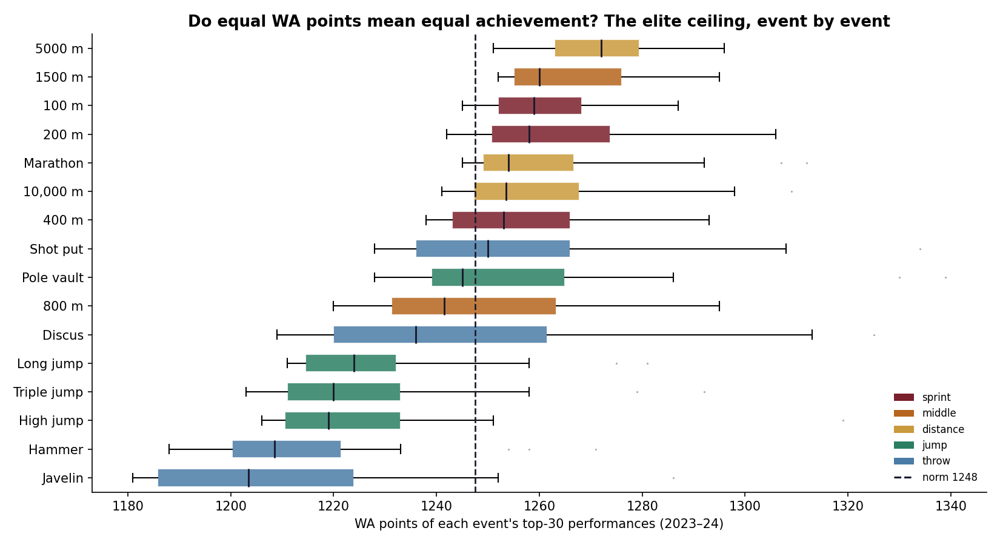
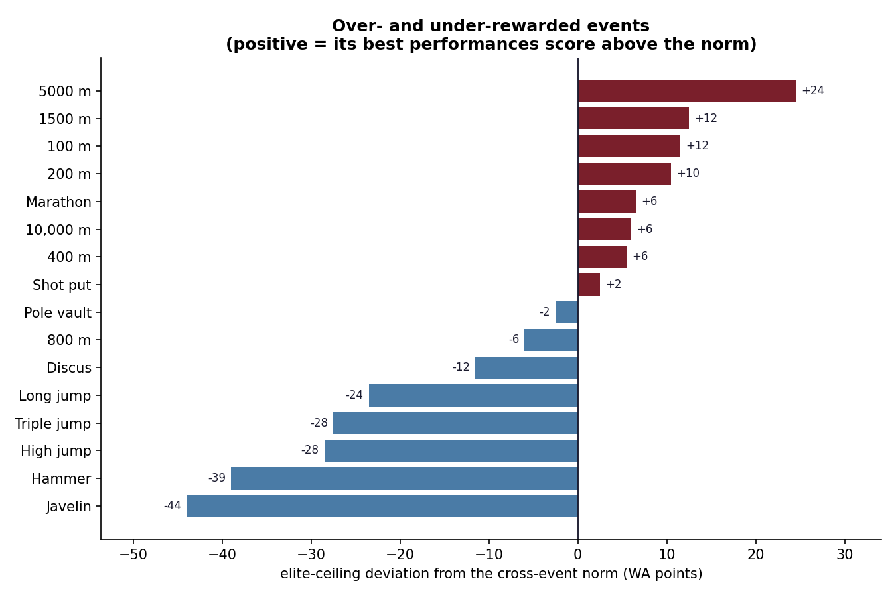

Cross-event awards
A points-based shortlist quietly favours distance runners over throwers at the same standing within their event.
The tables promise that 1200 points is 1200 points.
Combined events, athlete-of-the-year votes, every "who is the GOAT" argument , all of them rest on the World Athletics scoring tables treating events equivalently. Tested directly against 6,400 top performances across 16 events, the median score of an event's top 30 ranges over 68 points, from the 5000 m at +24 above the cross-event norm down to the javelin at −44. Kruskal-Wallis rejects equality at H = 236, p ≈ 10⁻⁴².
spread in the elite ceiling between the highest-scoring and lowest-scoring event.
the 5000 m, furthest above the cross-event norm. The 1500 m sits close behind it.
the javelin, furthest below. Hammer and high jump sit down there too.
for the hypothesis that all sixteen events score equally at the top. Not a marginal result.
Start · why it matters
The scoring tables are the plumbing of athletics. Nobody argues about them, because nobody notices them. But the moment anyone compares a decathlete's javelin to their 1500 m, or ranks a shot putter against a miler for an award, the tables are doing the work, and the whole exercise inherits whatever bias they carry.
The claim is testable. If the tables are level, then the best javelin throwers in the world and the best 5000 m runners in the world should be earning roughly the same number of points, because both groups are at the frontier of their event.
↓ the test
Take each event's top 30 performances of 2023–24 and look at the median WA score. If the tables were level these medians would cluster. They do not: they spread across 68 points.
Distance and middle distance sit highest, with the 5000 m and 1500 m at the top. Throws and jumps sit well below, with the javelin, hammer and high jump at the bottom. The Kruskal-Wallis test rejects equality overwhelmingly.
Put plainly: the same 1250 points is a merely very good javelin throw and a fairly ordinary 5000 m.


↓ the part most write-ups skip
An event's elite score distribution reflects two things at once: how the table is calibrated, and how deep and competitive that event's current field is. A thinly contested event will show a lower ceiling even under a perfectly fair table, simply because fewer athletes are pushing its frontier.
The javelin and hammer are exactly the events you would expect to be thin. So the honest reading of this result is "equal points do not currently mean equal elite standing," not "the tables are wrong." Both readings share the same chart; only one is supported by it.
Separating the two would need per-mark calibration against a fixed physical frontier rather than against the current field. That is the natural next step and it is not what this repository does. The gap is real; its cause is part table and part talent pool.
↓ so what
A points-based shortlist quietly favours distance runners over throwers at the same standing within their event.
The same points gap applies inside the decathlon and heptathlon, where the tables decide the whole result.
Any national-strength measure built on WA points inherits this tilt: including my own, which is why the two studies are published together.
Finish · how it was built